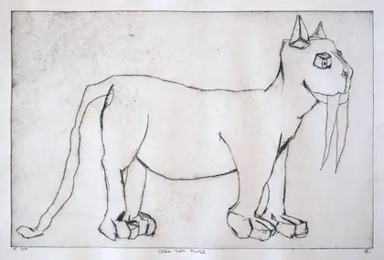

A Field Guide to the Creatures
The archive can tell you that thirty-one works carry the tag animist solarpunk and nine carry space helmet. It cannot tell you that these are one continuous population, or how to recognise a member of it in the wild. That is what a guide is for. Begin at the key; it will take four questions at most.
Key to the plates
Suited fauna
Animalia · apparatus worn
oil on linen

oil on cotton canvas

intaglio drypoint print

intaglio drypoint print

oil on linen
The founding population. An animal takes on the gear of the species that endangered it, and wears it without comment. Note that the apparatus is always hand-made, never sleek: rubber, glass, cord, salvage.
Range in the record
Grafted machines
Mechanica · symbiotic
oil on gesso panel

oil on linen

acrylic on found object

oil on panel

intaglio drypoint print
Antennae, satellite dishes, radar. The machine is not a rider but a graft — it has grown into the animal and neither would now survive the separation.
Range in the record
Vitrine-bearers
Conservata · in glass
oil on linen

intaglio drypoint print

oil on linen

acrylic and latex on canvas
Whole systems kept in jars: lightning, oxygen, a cactus, the sea ice. The commonest specimen in the recent record and the most anxious.
Range in the record
Suited figures
Homo · tethered
oil on handwoven linen

drypoint intaglio print, hand-colored with watercolor

intaglio drypoint print

intaglio drypoint print

drypoint intaglio print
The human members. Usually alone, usually tethered to something they are walking, and usually smaller in the frame than you expect.
Range in the record
Deep-time relicts
Reliquiae · unaugmented
oil on linen

intaglio drypoint print

intaglio drypoint print

oil on cotton canvas

oil on linen
No gear at all. Trees older than the state, megafauna that did not make it, a clovis point. They are here to set the scale everything else is measured against.